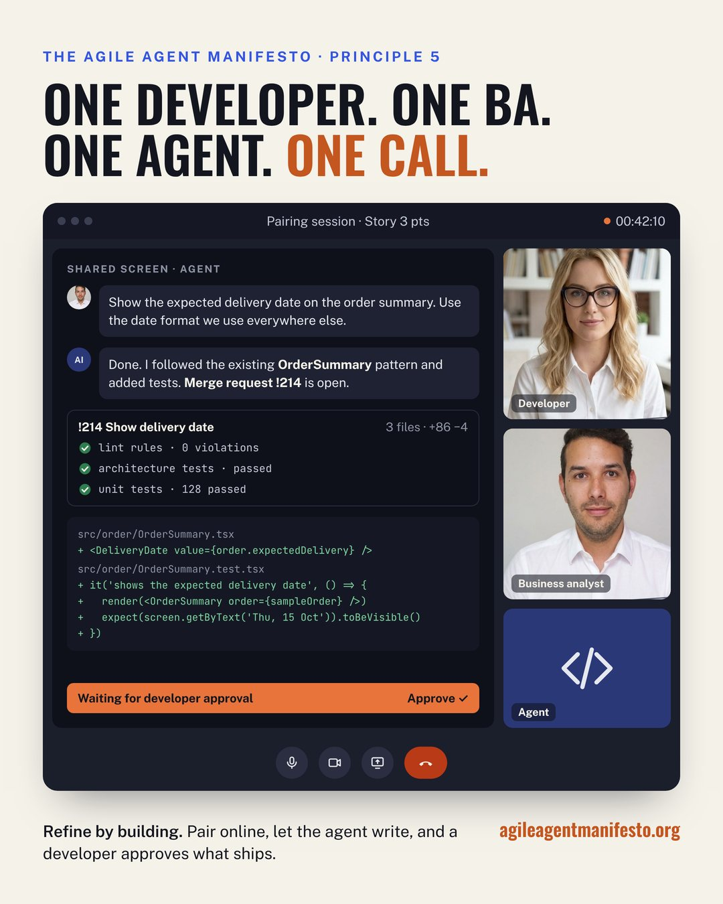

A manifesto for the agent era · October 2026
Agents now write good code. Typing is no longer the bottleneck. The bottleneck is knowing what to build, and keeping the code right while more people change it.
Why a new manifesto
For twenty years, agile teams were built around one scarce skill: writing code. Stories were written by the business, refined in meetings, and handed to developers who turned them into software.
Coding agents changed what is scarce. They write code that is good enough to ship after review. What remains hard is understanding what the business needs, and guaranteeing that the code base stays consistent when more people, and more agents, change it.
This manifesto describes how a team works when that is true. It is written for developers, business analysts, product owners and the people who lead them.
The manifesto
If a rule can't break the build, it's a wish.
AGENTS.md files and Copilot instructions help, but agents don't always follow them, and nobody notices when they drift from the code. A rule only counts when it can stop a change: a lint rule that fails the build, an architecture test that runs with the unit tests, a required review.
$ npm run build ✖ src/booking/controller.ts:14:1 architecture/no-layer-skip Controllers must not import from db/. Use the repository layer. Build failed: 1 rule violation.
Homogeneous code is what agents build on.
Agents copy what they see. When there is one way to build an endpoint, one way to handle errors and one folder structure, agents write code that looks like the rest. Invest in consistency first; every other layer depends on it.
Scripts for everything repeatable, agents for the rest.
Use AI to write the scripts, generators and codemods that automate every repeatable task. A script does the same thing every time and costs almost nothing to run. Use agents for the work a script can't do.
Business analysts and product owners open merge requests for what they know best.
With an agent and a platform that turns a prompt into a merge request, BAs and POs change texts, configuration, feature toggles and features that follow an existing pattern themselves, in the repositories they are allowed to change. Nobody waits for a sprint to fix a label.
Pair and build the story instead of only talking about it.
A refinement meeting discusses work someone will do later. In an Agile Agent team, a developer and a BA pair online and build the story in that same time. The goal is a 3-point story built in the time refinement used to take.
Agents are the autopilot. Responsibility never moves to the agent.
A developer reviews and approves every merge request, with AI help, and takes the controls when the autopilot fails. Architecture, security, performance and data migrations stay with developers.
Every change to how we work starts as a measured pilot.
One team, six to eight weeks. Measure lead time, review time, change failure rate and production defects before and after, and decide with the data.
The foundation
Build from the bottom up. Each layer catches what the one below misses.
The new team
4 developers + 1–2 BAs. The BA writes the story, the team refines it, developers build it. Every step is a handoff.
3 developers + 2 BA/BEs (business analysts or business engineers). They pair online every day and build the story together.

Principle 5 in practice
The BA describes the change, the agent writes it and opens the merge request, the guardrails run in CI, and the developer approves what ships.
The people in this picture are AI-generated.
Who changes what
A developer approves every change. Code owners rules in the repository protect the red zone, and repository permissions decide who can open a merge request where.
Prove it
Signatories
If you want to build software this way, sign the manifesto. Comment "I sign" on the launch post on LinkedIn, with your name and role, and you will be added here.